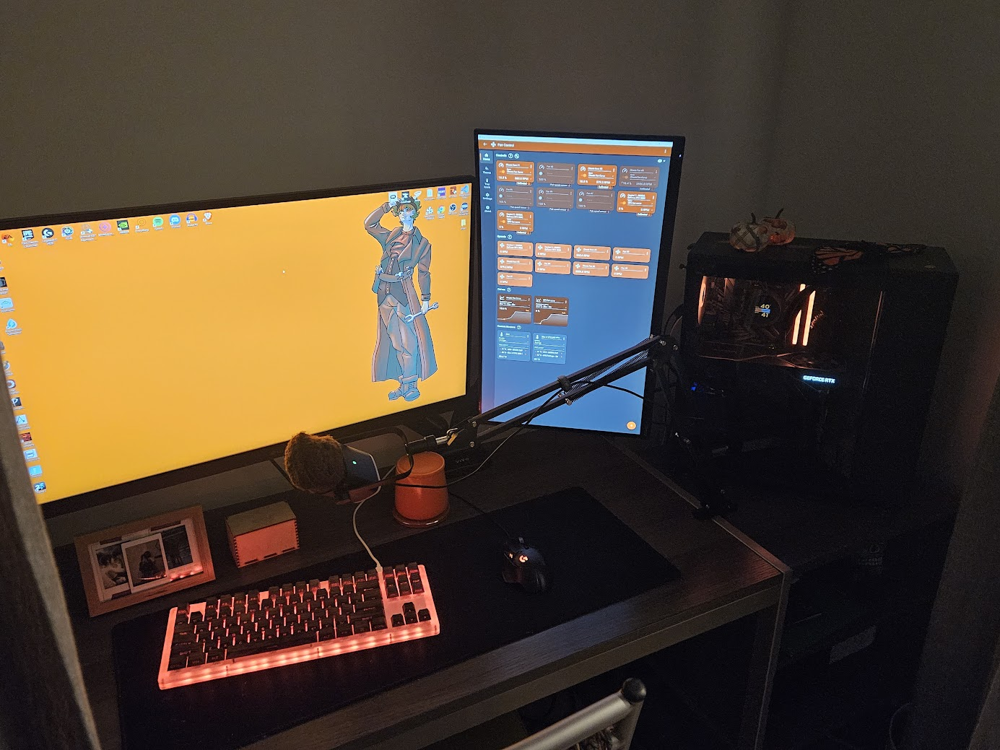

Bryce Jordan
Recent ski trip to Brighton Ski Resort
Personal info:
- Major: Computer Science
- High School:Alta High School, Sandy Utah, 2023
- Current year at UVU: Sophmore
- Favorite Ice-cream:Peanut Butter Cookie Dough
My five favorite books
- Morality by Christopher Hitchens
- Where the Red Fern Grows by Wilson Rawls
- The God Delusion by Richard Dawkins
- Michael Vey by Richard Paul Evans
- Percy Jackson by Rick Riordan
My personal interests
I spend way too much time playing games. My current favorite games are Helldivers, Warframe, Portal and Project Zomboid. This is the hobby I sink the most time and money into. I have a beefy rig that I am still upgrading. I am really excited for the new 50 series graphics card from Nividia. I am so excited for a game that was announced recently called The Blood of The Dawnbreaker from developers that I have been following for a while.
Another big interest I have is theology, the study of religion. I have started to get interested in this topic a few years ago after reading several texts. This opened me up to this amazing world of philosophy and deeper thought. Now I watch a lot of Alex O'Connor who is a fast growing philosopher who hosts a show called Within Reason where Alex hosts a guest from many different schools of thought. This interest has helped me expand my own thought about life and death.
With winter upon us I have been so excited to go up on the slopes with just two planks of wood going over 50mph. I have skiied since I was 4 and have tried to go up every year since. Two years ago I got a bad concussion on Christmas and took a year break the next season. This season is my first season back since then. I just bought new skis, poles and boots. It was a blast to go up on the mountain again.
Haiku
Worked on the poem in the library while my friends sent memes in a groupchat and we tried to stay quiet. Didn't get much work done.
The Library, Quiet
Stiffled laughs alongside friends
No work was started
Workstation Highlight
I wanted to show off my workstaion where no work really gets done. Mostly gaming and chatting with friends.
Weekly Schedule
| Mon | Tues | Wed | Thur | Fri | |
|---|---|---|---|---|---|
| 2:30 | CS 2550 | CS 2550 | |||
| 3:00 | |||||
| 3:30 | |||||
| 4:00 | CS 2300 | CS 2300 | |||
| 4:30 | |||||
| 5:00 | Work | Work | Work | ||
| 5:30 | Math 1060 | Math 1060 | |||
| 6:00 | |||||
| 6:30 | |||||
| 7:00 | |||||
| 7:30 | |||||
| 8:00 | |||||
| 8:30 | |||||
| 9:00 | |||||
| 9:30 | |||||
| 10:00 | |||||
| 10:30 | |||||
| 11:00 | |||||
| 11:30 | |||||
| 12:00 |